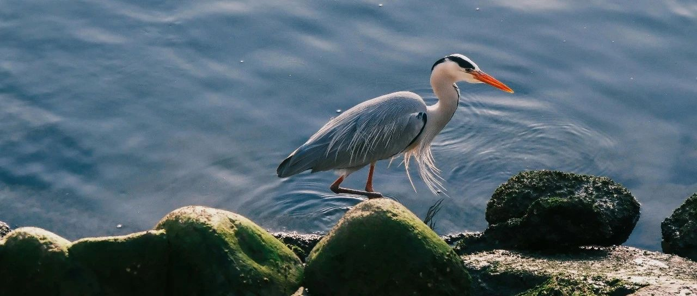

悬着的心终于放下了~
纳指跌了1.71%，收盘17504点；标普跌了1.07%，收盘5614.66点；
过去两个交易日，纳指和标普回涨了约3%，我还特意看了下盘，生怕就此止跌。
看到继续跌，悬着的心终于放下了，准备好的资金和弹药用得上。
英伟达这些个股的走势，和预期的一致，整体没什么偏差。我操作不多，捡了点谷歌进来，并设置了152+的节点再捡入一些；捡了点580Meta进来，并设置了570和551的节点再捡点进来。
苹果207和195的设置节点没变，英伟达等100的节点没变，Costco和礼来的节点没变，纳指和标普的节点也没变……耐心等待。
希望纳指和标普这次能有20%的跌幅，甚至更多一些。2022年抄底得有多难受，后来23-24年的回报就有多丰厚。
从1929年以来，标普出现过56次调整，其中只有22次演变为熊市，即从最近的历史高点下跌超过20%，其余34次都是修正。
修正的跌幅平均是13.8%，熊市的平均跌幅是35.6%，平均调整时间是115天。
目前这一轮的跌幅小于13%，调整才持续了23天。
在过去很多年里，我都选择错开人潮。
不随大流看空看多，坚持自己的判断。上涨不追高，逢高减仓（如近三个月的Costco、礼来、麦当劳、沃尔玛等）；下跌不慌反而很兴奋，逢低买入，也因此收获颇丰，几年下来，资产翻了数倍。
投资是一门功课，守财也是一门功课。
这就要求每个人做投资之前，要先做好风险控制，投资首先是保值，其次才是增值。
基于这点，我习惯随着上涨逐步卖出，做低成本/负成本，也因此应对上涨和下跌都没有压力，“进可攻退可守”，处变不惊、稳坐钓鱼台。
我在写公众号时，发现有一个现象很有趣:
穷人和富人的认知、思维，差异很大，甚至可以说是两极分化。
现实的情况是:你越有钱，你越懂有钱人，然后你越懂有钱人，越能有交集，资源和认知互通有无，你越有钱。
有一点不可否认:有认知的人往往比大多数人有钱，有钱人往往比大多数人有认知。
奈何现在的舆论，是大多数穷人总想教富人怎么做投资，很有趣，也很有勇气。
… …
昨晚八点左右，我看了一下盘前，和三个娃做了会互动。
平时我一般是教他们看趋势，相对比较少涉及到技术类。只要趋势对了，选对股，中长期持有就行了。
仓位管理，是我一直重点跟他们讲解和强调。
如果说仓位是开车，那么:满仓是油门踩死，冲得猛但很容易出事故；空仓是车都没启动；正确的应该是趋势明朗加仓，风险高了减仓，在路上根据不同的路况决定加速还是减速。
仓位管理就像汽车的安全带。遇到下跌能心态平和逐步抄底，而不是满仓恐慌且无能为力。
永远不满仓，就是给自己留机会。做个懂进退的投资者，不让自己陷入被动的境地。上杠杆要非常非常谨慎，除非把握很大。
我一般是7-7.5成仓，最少留足30%备用金，极个别情况下会8成仓。
买卖时可以用金字塔加仓法在买入，用倒金字塔法卖出。我之前做过解读，“2-3-3-2”中就有金字塔法的精髓，在这再详细做个解读吧。
正确的操作是:
下跌时，金字塔加仓法的应用:100元买30股，90元买50股，80元买80股，70元买120股…
随着下跌增加买入量，这样可以有效摊低成本。成本从100元降到79.64元，那么只要反弹回80元，就开始账面浮盈。
上涨时，金字塔加仓法的应用:100元买100股，105元买50股，110元买30股…随着上涨，只少量加仓，不轻易追高，除非上涨趋势确认，成本也能控制在相对低位。
所以选股很重要，选股不对，再怎么补仓，只会越补越亏。
卖出时，都用倒金字塔法卖出:110元卖30股，120元卖50股，130元卖80股…
这样可以先收回本金和将一部分利润落袋为安，逐步做成负成本，其余的利润放在账户里面继续持有，跌了也不心疼，不容易患得患失。
一般来说，补仓的价格档差要逐步拉大，如果资金预算相对比较有限，那可以把档差拉大到8%，甚至10-15%；
像我这种资金几乎无限的，采用的小步快跑，5-10-20美元左右加仓一次，不适合所有人；遇到特斯拉这种大跌的，我也一样是15-20%档差。
所以我常说“要结合自己的情况，适合自己的才是最好的”。
如果下跌时买多了，导致仓位接近满仓，或持股的个股数量太多，吞噬的资金太多，那可以做T。
做T分两种:“正T操作”和“反T操作”。
比如上面说的下跌时用金字塔加仓法，最终成本由100降到了79.64元。那么等价格涨回79.64元后，比如在80元时先卖掉一部分，就是在保本的同时，腾出资金和仓位。这种先买后卖，就是“正T操作”。
“反T操作”就是先卖后买，100元时预计会跌，就先卖掉，等80-90元时再买回，这样同样赚了点差价。
一般来说，对于中长期持有的投资者来说，应对短期内的下跌，抄底过程中做T是常用的方法。
做T要留够底仓，其余的做T，才不容易导致卖飞了。做T需要有一定的技术水平，但确实是降低成本、增加收益的好方法。
以上这些，我以前的更新都说过，这次是更具体点做个总结和举例。后续，会写MACD、PE等，穿插在日常更新中吧。
一转眼在美股已经满十八年，从新手一路成长过来的，能明白那种很渴望有人能帮忙答疑解惑的感觉，所以会尽可能把一些实用的技术以通俗易懂的方式呈现给大家。
心可以选择柔和，可以选择慷慨，可以选择同情，也可以选择冷酷或者狰狞。
当一个人还有选择的时候，最好停那么一下，让选择权悬停片刻。在这片刻之间，一个人也许可以认识到自我。
一个人如何选择，那么他就是个怎样的人。
投资，本身也是一个和自己的价值观相印证的过程。
我们要寻找的答案，不一定在终点，而在路上。
免责声明：本人提供的信息仅供参考，不构成投资建议。本人的交易不代表任何立场；投资者应根据自身财务状况、投资目标等情况自主做出投资决策并承担投资风险。投资有风险，入市需谨慎。